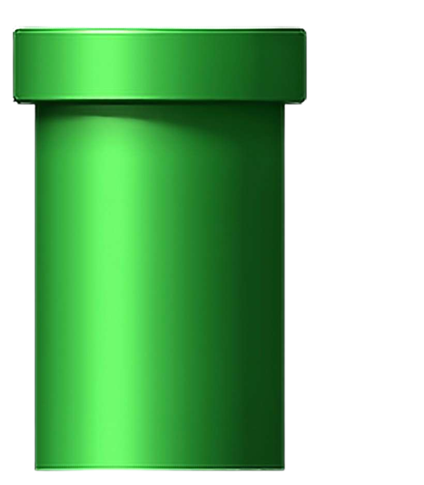
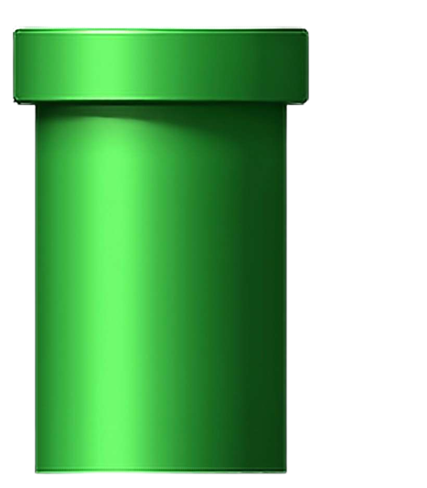

Super Mario Bros
Mario é um encanador junto com o seu irmão Luigi. Um dia, eles vão parar no reino dos cogumelos, governado pela Princesa Peach, mas ameaçados pelo rei dos Koopas, que faz de tudo para conseguir reinar em todos os lugares. Explore More